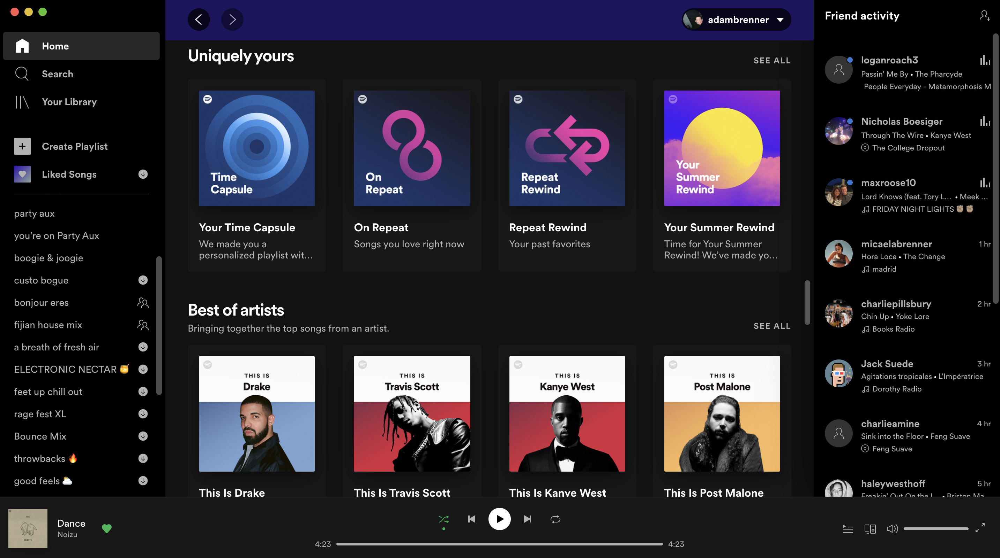

Hi, 👋 I am Adam Brenner
I am currently a Junior at the University of Michigan majoring in Information Analysis within the School of Information and minoring in Business Administration within the Ross School of Business.
People | Service | Techonology | Solutions
I am passionate about Data Analysis and User Experience Design with a focus on the intersection between people and technology and how they interact.
I am interested in finding technological solutions to problems in the world.
Currently...
Working with friends to create a social media interface called Track Teusday where users are able to interact with their friends and post their favorite track for the day or week. We are just beginnning it and hope to use elements from Spotify to achieve our goals.
We want to create a platform for music lovers to be able to connect with users over music and be able to find new music that is not typically found through Spotify algorithms.